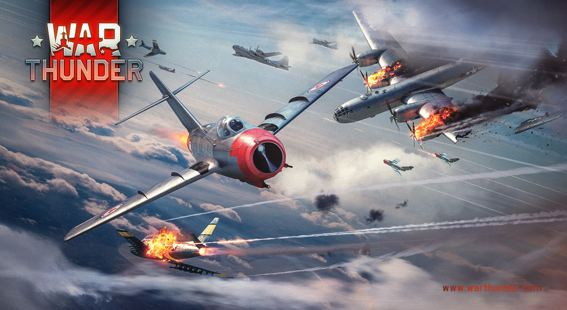
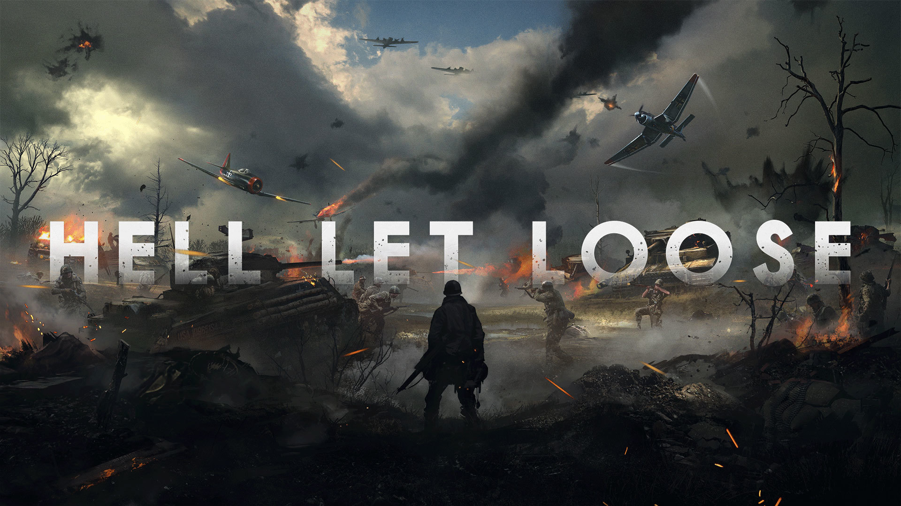

Jag växte upp i en liten stad som heter Norrtälje cirka en timme nordöst om Stockholm. På sommaren är Norrtälje ett paradis med en fin vik, mysig innerstad och mestadels trevligt folk. Dock, när det inte är sommar är Norrtälje nog en av Sveriges tråkigaste städer eller okej inte trågiaste, det går nog till Boden. Men fortfarande inget roligt ställe. Tur för mig är jag en relativt Introvert nörd som föredrar att sitta hemma och spela på dagarna än att vara ute med kompisar och gå runt på stan. Dock när jag fyllde 15 år och precis börjat Nian flyttade min mamma från lilla hålan Norrtälje till Södermalm. Strax där efter flyttade jag också till södermalm där jag än idag bor. Med detta valde jag att studera på Nti Gymnasiet Stockholm då man sysslade med sånt som jag vill göra när jag blir stor. Känns verkligen skönt att slippa lära sig ämnen som Religion, Bild, Slöjd men framförallt slippa Franska.
-

War Thunder är det mest omfattande free-to-play, cross-platform, MMO-militärspel fokuserad på militärfordon. I War Thunder samarbetar flygplan, attackhelikoptrar, markstyrkor och fartyg i realistiska tävlingsstrider. Du kan välja mellan över 1700 fordon och ett stort antal stridsituationer
-

Hell Let Loose är ett extremt roligt spel som inte handlar om antal dödade och upplåsningar, utan lagarbete är nyckeln till framgångsrikt spel. Kommunikation är livsviktigt. Spelarna arbetar tillsammans under ledningen av officerare och deras befälhavare för att ta strategiska mål på slagfältet och dominera motståndet i stora 100 spelare multiplayer matcher
-

Hearts of Iron IV är ett andra världskriget strategi spel där man kan spela som vilket land udner andra världskriget och ta hand om ekonomi, politik och militären där du kan bli en warmonger och ta över hela världen. Detta spel är extra kul online där man även blandar in roleplay och jämför templates och pratar diplomatiskt. Hearts of iron 4 är lätt på utsidan men man kan gå djupt in i spelet och lära sig Metan